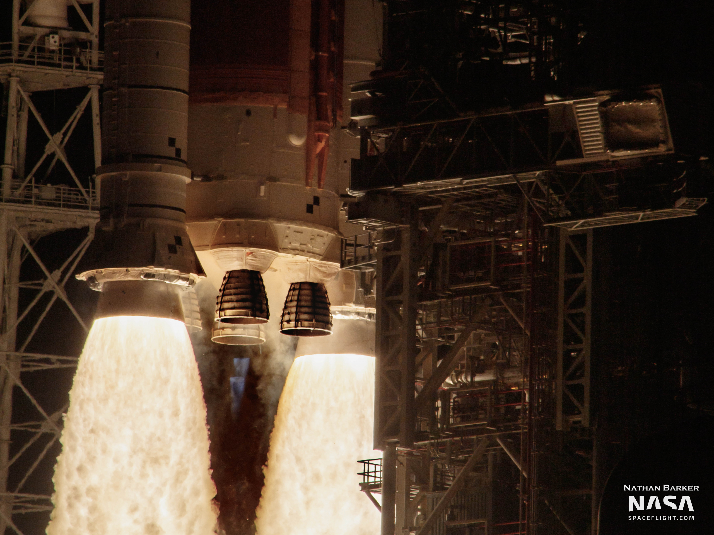
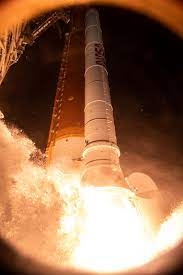
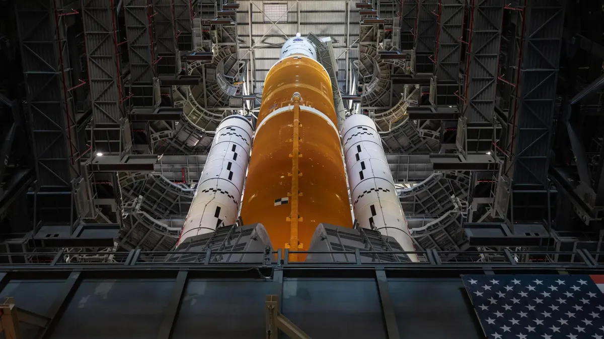

Rocket Upgrades
The rockets designed for the new spacecraft are like no other. The core stage with 4 RS-25 engines filled with hydrogen and liquid oxygen starts its initial lift-off along with the two side boosters. The RS-25s make 2 million pounds of thrust. The boosters have 7.2, giving a total of 8.8 million pounds of thrust. This is about a 15% power boost compared to the Saturn V rocket engines. Overall, the SLS got some nice upgrades including faster liftoff and pad clearing time. It also has an upgraded upper stage for more cargo, which in turn allows longer operation time. The Artemis rocket is now the most powerful rocket ever made and since it is bigger this means multiple missions will be assigned.
Engine components
- Low pressure fuel turbopump
- High pressure oxidizer turbopump
- Main combustion chamber
- Nozzle with regenerative cooling system
Rocket Gallery
The new rockets are a sight to see; they are the most robust and advanced we have made yet.
Close up shot of liftoff.
Ground view
Full view bottom of pad
